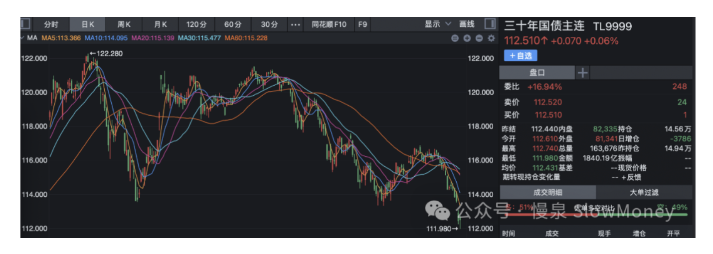
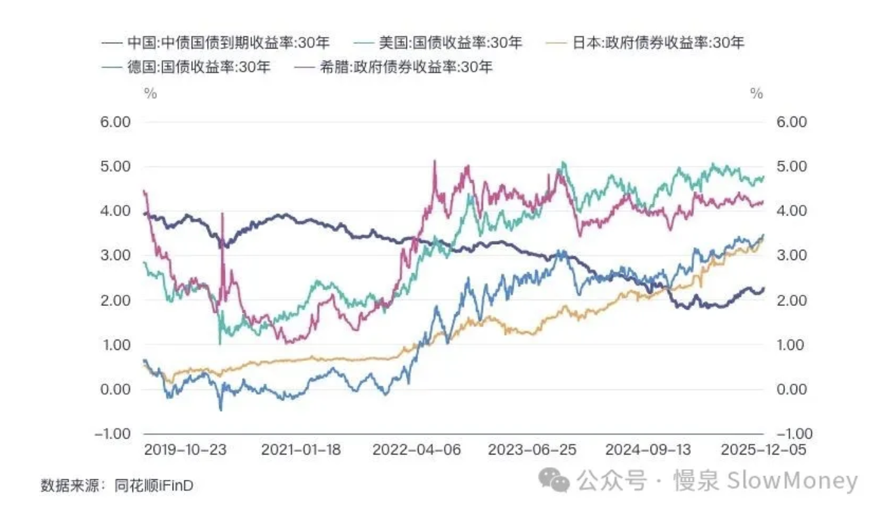
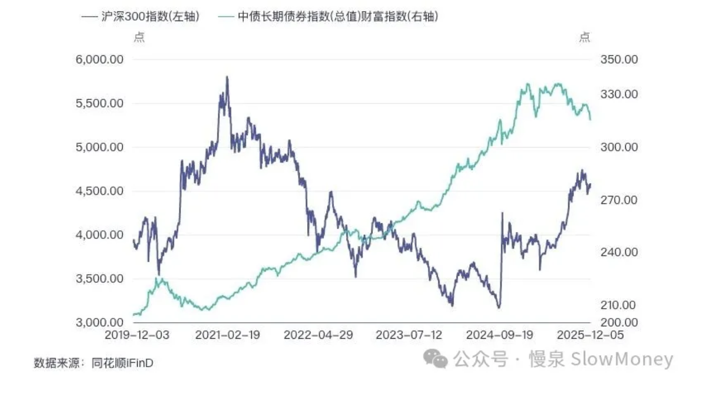

宏观讨论20251207-你相信债么
2025-12-07 · 长债怎么了？ · 宏观讨论（补档）
最近的长期债券市场吸引了大家的眼球——30 年国债收益率上行 10bp，过去一月 30 年国债期货下跌 4%，7 月份以来 30 年国债期货跌幅接近 10%。

当然不仅仅在中国——全球的 30 年国债，以日本为首也开始向上突破上行。全球的长端债券市场经历了连续第三年的高位盘整，而且没有下行的迹象。

长端债券还能信么？还能玩么？咱们捋一捋。
咱们捋一捋
股和债在本质上应该反映实体经济的综合回报率。从「资产 = 负债 + 权益」的角度来看——资产所产生的回报越高，给予权益和债券持有人的回报都应该上升。
所以经济繁荣，股票和债券的收益率均上行；经济萧条，股票和债券的收益率均下行。当前全球债券收益率上行，反映了 AI 革命之后对于经济增长乐观预期的长期性。
注意：债券收益率上行体现在价格上是下跌——所以繁荣时期股涨、债跌。
回到投资上
2019 年以来的中国权益市场（沪深 300）投资收益 30%，债券指数上涨 50%——考虑到沪深 300 表现较差，如果用 Wind 全 A（上涨 50%），与债券指数持平。
2021 年到 2024 年 9 月，债券投资收益碾压股票投资者——股票投资者跌幅接近 50%，是债券投资者眼中的"傻叉"。
2024 年 9 月之后，特别是 2025 年后，债券震荡调整，股票快速反弹。

站在当下，你还相信债么？——也许这里只有美债能看看。
原文 / 观点：Matt · johsnon0827@gmail.com